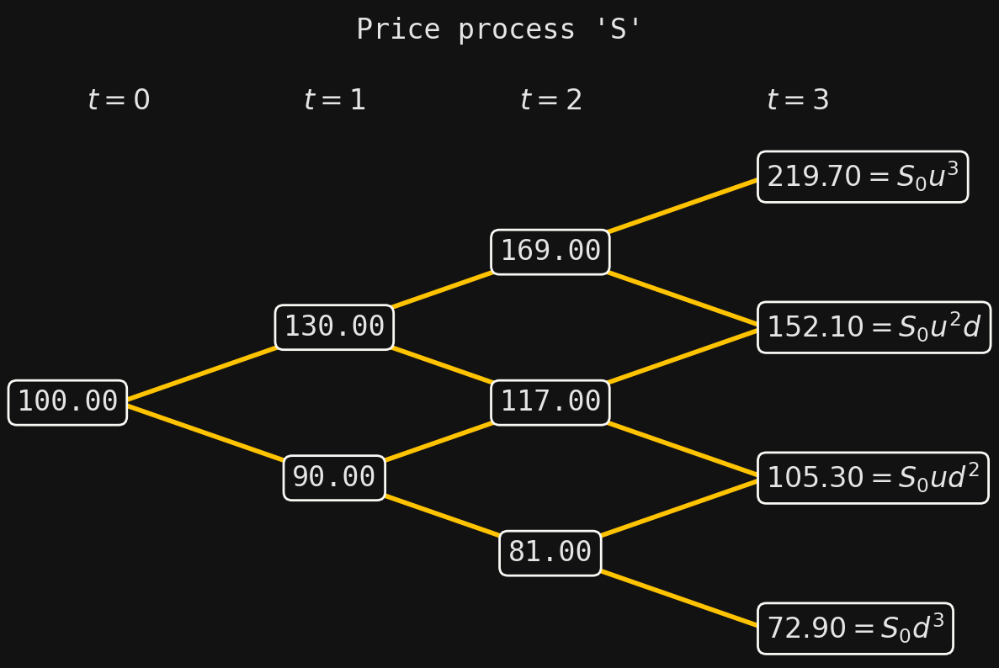

Finance with SigAlg II: Arbitrage and martingales
Finance
Pricing models
Binomial pricing models
Equivalent martingale measures
Arbitrage
Fundamental Theorem of Asset Pricing
Probability theory
Measure theory
Stochastic processes
Sigma-algebras
Filtrations
Conditional expectations
Information theory
SigAlg
Python
from sigalg.core import Time
from sigalg.finance import BinomialPricingModel
S_0 = 100 # initial price
r = 0.05 # risk-free rate
p = 0.7 # real-world probability
u = 1.3 # up-factor
d = 0.9 # down-factor
T = 3 # time horizon
# Instantiate a time index
time = Time.discrete(length=T)
# Instantiate a binomial model
S = BinomialPricingModel(
initial_price=S_0,
risk_free_rate=r,
up_prob=p,
up_factor=u,
down_factor=d,
time=time,
name="S",
).from_enumeration()
S._data = S._data.round(2)
S.print_trajectories_and_probabilities() 0 1 2 3 probability
trajectory
0 100 130.0 169.0 219.7 0.343
1 100 130.0 169.0 152.1 0.147
2 100 130.0 117.0 152.1 0.147
3 100 130.0 117.0 105.3 0.063
4 100 90.0 117.0 152.1 0.147
5 100 90.0 117.0 105.3 0.063
6 100 90.0 81.0 105.3 0.063
7 100 90.0 81.0 72.9 0.027Arbitrage
In finance, the word arbitrage refers to an opportunity to turn a profit with no risk of loss. The types of arbitrage relevant to our discussion in this series of posts seek to exploit the relative “mispricing” of two assets in the market. While from an investor’s point of view an arbitrage is a shot at free money, from a modeling point of view, arbitrages are generally viewed as mathematical pathologies.
So, we begin with two assets. One of them is like any of the assets we discussed in the previous post on binomial pricing models, while the other is assumed to be risk-less, in the sense that its price process is fully deterministic. Specifically, we suppose that there is a positive real number \(r\), called the risk-free rate, such that an amount \(B_t\) invested in the risk-less asset at time \(t\) will evolve to \((1+r)B_t\) at time \(t+1\). For example, we might imagine that \(B_t\) measures a cash position held in a bank that earns per-period interest at rate \(r\). (The rate \(r\) is assumed constant in time.) Crucially, we assume not only that we can hold cash in the bank, but that we can also borrow from the bank at the same rate. The difference between the two is signified by positive \(B_t\) (holding cash in the bank, earning interest at rate \(r\)) versus negative \(B_t\) (borrowing from the bank, paying interest at rate \(r\)). For future convenience, we set \(R=1+r\), called the risk-free gross return.
In addition to the cash position in the bank, we assume the existence of a second asset in which we hold either a short or long position, and which we assume has price process \(S_t\), measured in USD per unit (for example). Then at each time \(t\geq 0\), our two-asset portfolio is valued at
\[ V_t = B_t + S_t \Delta_t, \tag{1}\]
where \(\Delta_t\) is the number of units of the asset held with price process \(S_t\). A positive value of \(\Delta_t\) represents a long position, while a negative value represents a short position. One time period later, the value of our portfolio will evolve to
\[ R B_t + S_{t+1} \Delta_t. \tag{2}\]
Relative to the cash position, the second asset is assumed to be risky (for example, an equity asset). This “risk-less vs. risky” difference between the two assets has ramifications if, for example, we model the price process \(S_t\) of the risky asset using a binomial model and we want to avoid arbitrage. To explain, suppose binomial model has up- and down-factors \(u\) and \(d\), respectively. As most investors are (at least mildly) risk-averse, we would expect a larger return for the risky asset versus the non-risky one in compensation for bearing risk. Thus, we would expect at least that \(R \leq u\). But, the risk-free gross return \(R\) cannot be so small that \(R<d\), for otherwise an arbitrage appears. Indeed, if \(R<d\), then at time \(t\) we could borrow \(S_t\) from the bank (so that \(B_t = -S_t\)) and then purchase one unit of the risky asset (so that \(\Delta_t=1\)). Then our portfolio is valued at \(V_t=0\) at the time of transaction, representing no initial (net) outlay of capital, while the value of the portfolio will evolve to
\[ R B_t + S_{t+1} \Delta_t = -RS_t + S_{t+1} \geq S_t(d-R) >0 \]
one time period later. This is an arbitrage, and in order to avoid it, we must assume that \(R\geq d\).
While we said it is natural to assume \(R\leq u\) based on considerations of risk, we can confirm mathematically that if this were not true, then another aribtrage presents itself. For if \(R>u\), then at time \(t\) we could short one unit of the risky asset (so that \(\Delta_t=-1\)) and invest the proceeds in the bank (so that \(B_t = S_t\)). Again, our portfolio would be valued at \(V_t=0\) at the time of transaction, while one time period later its value will evolve to
\[ RB_t + S_{t+1} \Delta_t = RS_t - S_{t+1} \geq S_t(R- u) >0. \]
This is another arbitrage, and so we must assume \(R \leq u\).
Our arguments above show the following: If there are no arbitrages in the binomial model, then we must have
\[ d \leq R \leq u. \tag{3}\]
Interestingly, the converse is also true, which leads us to our first glimpse of one of the foundational results in mathematical finance:
With the theorem as justification, the inequalities (3) are called the no-arbitrage condition. A fully rigorous proof of the theorem requires a bit more precision in the definition of arbitrage; we will leave the interested reader to look up a proof in a suitable reference (for example, Proposition 2.26 in [1]).
Equivalent martingale measures
The statement of the Fundamental Theorem of Asset Pricing (in Theorem 1) is referred to as “version 1”. In this section we discuss a second version, which more closely aligns with the statement one would find in textbooks, and which deals with so-called equivalent martingale measures.
By way of introduction, consider again the cash position held in the bank. Suppose that we deposit an initial amount \(B_0\) at time \(t=0\), and hold the position over a period of time with no additional cash infusions or withdrawals. Obviously, then, if we know the balance in the account at a particular time \(t\), say \(B_t\), then we know the balance one time period later:
\[ B_{t+1} = RB_t, \]
where \(R\) is the risk-free gross return. Reciprocally, the current balance is the present value of the future balance, i.e.,
\[ B_t = \frac{1}{R} B_{t+1}. \tag{4}\]
So, given the current balance \(B_t\) at time \(t\), we know for certain the balance one period into the future. We ask: Is there something analogous that we could say about the price process \(S_t\) of the risky asset?
Working toward an answer to this question, suppose that a time \(t\) is fixed, and that we observe the current price \(S_t\) of the asset. Of course, since the price process is stochastic, we would never be able to predict the future price \(S_{t+1}\) with absolute certainty—this would require seeing into the future. But, as we know from basic probability theory, the expectation \(E(S_{t+1} \mid S_t)\) is the best approximation of \(S_{t+1}\), given \(S_t\), in the sense that it is the closest \(\sigma(S_t)\)-measurable random variable to \(S_{t+1}\) in mean squared error. So, with the expectation in place of \(S_{t+1}\), and taking the time value of money into account, we then wonder if something analogous to (4) holds—something like
\[ S_t = \frac{1}{R} E(S_{t+1} \mid S_t)? \tag{5}\]
However, this obviously cannot hold, because the expectation is discounted via \(R=1+r\), which is built from the risk-free rate \(r\). But the asset under discussion is risky, and hence we would expect that the correct discount factor (if it even exists) should include a risk premium.
The reader might try and prove the theorem on their own. We will settle for checking the equality in a few examples using SigAlg:
import numpy as np
P = S.probability_measure
F = S.natural_filtration
atoms = F[2].to_atoms()
expected_atom_probs = [0.7**2, 0.7 * 0.3, 0.7 * 0.3, 0.3**2]
for atom, prob in zip(atoms, expected_atom_probs):
print(np.allclose(P(atom), prob))True
True
True
TrueThus, we have
\[ \frac{1}{P(A)}\langle S_{t+1}, I_A \rangle = S_t(\omega)(up + d(1-p)). \]
It then follows that
\[ \frac{1}{R}E(S_{t+1} \mid \mathcal{F}_t) = \frac{up+d(1-p)}{R}S_t. \]
R = S.risk_free_gross_return
print(S[2].expectation(sigma_algebra=F[1]) / R)
print((u * p + d * (1 - p)) / R * S[1])Random variable '(E(S_2|1)/1.05)':
(E(S_2|1)/1.05)
trajectory
0 146.095238
1 146.095238
2 146.095238
3 146.095238
4 101.142857
5 101.142857
6 101.142857
7 101.142857
Random variable '(1.1238095238095238*S_1)':
(1.1238095238095238*S_1)
trajectory
0 146.095238
1 146.095238
2 146.095238
3 146.095238
4 101.142857
5 101.142857
6 101.142857
7 101.142857References
[1]
Björk, T., Arbitrage theory in continuous time, fourth, Oxford finance series, Oxford University Press, 2020.